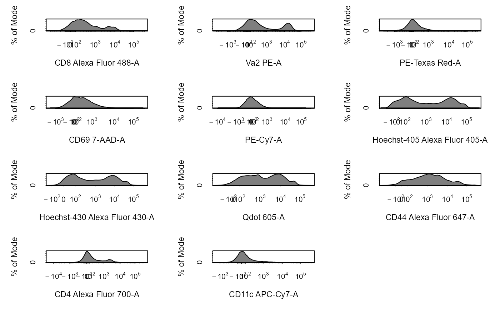

cyto_plot_gating_tree provides a simpler visualisation of the gating
scheme for GatingHierarchy, GatingSet and gatingTemplate
objects. The GatingHierachy method is also capable of displaying
population statistics such as frequency of parent or count.
# S3 method for GatingHierarchy cyto_plot_gating_tree(x, stat = NULL, ...) # S3 method for GatingSet cyto_plot_gating_tree(x, ...) # S3 method for gatingTemplate cyto_plot_gating_tree(x, ...)
| x | object of class |
|---|---|
| stat | used in |
| ... | not in use. |
Dillon Hammill (Dillon.Hammill@anu.edu.au)
library(CytoExploreRData) # Load in samples fs <- Activation # Add samples to GatingSet gs <- GatingSet(fs) # Apply compensation gs <- cyto_compensate(gs) # Transform fluorescent channels gs <- cyto_transform(gs, select = "Stim-D", trans_type = "logicle")#>#>#>#>#>#>#>#>#>#>#>#>#>#>#>#>#>#>#>#>#>#>#>#>#>#>#>#>#>#>#>#>#>#>#>#>#>#>#>#>#> A GatingSet with 33 samples# Visualise gating tree using gatingTemplate cyto_plot_gating_tree(gt) # Visualise gating tree for GatingSet (same output as gatingTemplate) cyto_plot_gating_tree(gs) # Visualise gating tree for GatingHierarchy cyto_plot_gating_tree(gs[[32]], stat = "percent") cyto_plot_gating_tree(gs[[32]], stat = "count")